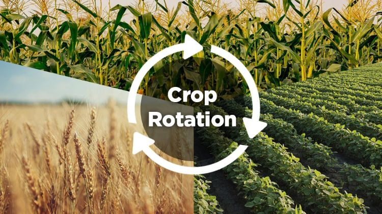

What is Crop Rotation?
Crop rotation is a farming practice where different types of crops are planted in the same field across different seasons. This technique ensures soil health is maintained while disrupting pest and disease cycles.

Benefits of Crop Rotation
- Improves Soil Fertility: Alternating crops that use different nutrients ensures balanced soil health.
- Pest and Disease Control: Rotating crops breaks pest and disease cycles tied to specific plants.
- Reduces Erosion: Continuous crop coverage protects soil from erosion.
How to Practice Crop Rotation
To implement crop rotation effectively, follow these guidelines:
- Alternate nutrient-demanding crops like maize with nitrogen-fixing legumes such as beans or peas.
- Adopt a three-year rotation plan for optimal results:
- Year 1: Plant cereals (e.g., maize, wheat).
- Year 2: Plant legumes (e.g., beans, lentils).
- Year 3: Plant root crops (e.g., carrots, potatoes).
- Track crop cycles to prevent overlap.
Examples of Crop Rotation
Farmers have successfully used crop rotation with combinations like:
- Wheat → Lentils → Potatoes
- Maize → Beans → Carrots
- Barley → Clover → Onions